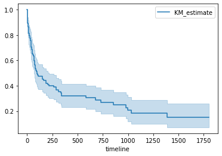
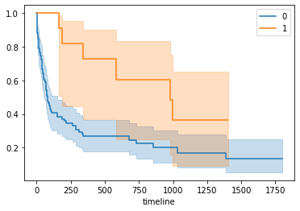
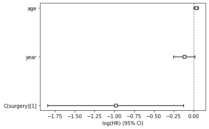

import numpy as np
import pandas as pd
import patsy as pt
import lifelines as lf
import matplotlib.pyplot as plt
import statsmodels as smPYTHON
Deux paquets d’analyse: principalementlifelines (km, cox, aft…) et statsmodels (estimation logit en temps discret, kaplan-Meier, Cox).
Le package statsmodels est également ne mesure d’estimer des courbes de séjour de type Kaplan-Meier et des modèles à risque proportionnel de Cox. Le package lifelines couvre la quasi totalité des méthodes standards, à l’exception des les risques concurrents.
import os
os.environ['QT_QPA_PLATFORM_PLUGIN_PATH'] ='C:/Users/thevenin_m/AppData\Local/Continuum/anaconda3/Lib/site-packages/PyQt5/Qt5/plugins/platforms'Chargement de la base
trans = pd.read_csv("https://raw.githubusercontent.com/mthevenin/analyse_duree/master/bases/transplantation.csv")
trans.head(10)
trans.info()Package lifelines
https://lifelines.readthedocs.io/en/latest/
Non Paramétrique: Kaplan Meier
Estimateur KM et durée médiane
T = trans['stime']
E = trans['died']
from lifelines import KaplanMeierFitter
kmf = KaplanMeierFitter()
kmf.fit(T,E)
print(kmf.survival_function_)
a = "DUREE MEDIANE:"
b = kmf.median_survival_time_
print(a,b) KM_estimate
timeline
0.0 1.000000
1.0 0.990291
2.0 0.961165
3.0 0.932039
5.0 0.912621
... ...
1400.0 0.151912
1407.0 0.151912
1571.0 0.151912
1586.0 0.151912
1799.0 0.151912
[89 rows x 1 columns]
DUREE MEDIANE: 100.0kmf.plot()
Comparaison des fonctions de survie
ax = plt.subplot(111)
kmf = KaplanMeierFitter()
for name, grouped_df in trans.groupby('surgery'):
kmf.fit(grouped_df['stime'], grouped_df['died'], label=name)
kmf.plot(ax=ax)
from lifelines.statistics import multivariate_logrank_test
results = multivariate_logrank_test(trans['stime'], trans['surgery'], trans['died'])
results.print_summary()<lifelines.StatisticalResult: multivariate_logrank_test>
t_0 = -1
null_distribution = chi squared
degrees_of_freedom = 1
test_name = multivariate_logrank_test
---
test_statistic p -log2(p)
6.59 0.01 6.61Semi paramétrique: Cox
Estimation
model = 'year + age + C(surgery) -1'
X = pt.dmatrix(model, trans, return_type='dataframe')
design_info = X.design_info
YX = X.join(trans[['stime','died']])
YX.drop(['C(surgery)[0]'], axis=1, inplace=True)
YX.head()
from lifelines import CoxPHFitter
cph = CoxPHFitter()
cph.fit(YX, duration_col='stime', event_col='died')
cph.print_summary()
cph.plot()<lifelines.CoxPHFitter: fitted with 103 total observations, 28 right-censored observations>
duration col = 'stime'
event col = 'died'
baseline estimation = breslow
number of observations = 103
number of events observed = 75
partial log-likelihood = -289.31
time fit was run = 2021-04-21 13:24:52 UTC
---
coef exp(coef) se(coef) coef lower 95% coef upper 95% exp(coef) lower 95% exp(coef) upper
> 95%
C(surgery)[1] -0.99 0.37 0.44 -1.84 -0.13 0.16
> 0.88
year -0.12 0.89 0.07 -0.25 0.01 0.78
> 1.01
age 0.03 1.03 0.01 0.00 0.06 1.00
> 1.06
z p -log2(p)
C(surgery)[1] -2.26 0.02 5.40
year -1.78 0.08 3.72
age 2.19 0.03 5.12
---
Concordance = 0.65
Partial AIC = 584.61
log-likelihood ratio test = 17.63 on 3 df
-log2(p) of ll-ratio test = 10.90
Tests hypothèse PH
Test PH: Schoenfeld Méthode 1
cph.check_assumptions(YX,p_value_threshold=0.05)The ``p_value_threshold`` is set at 0.05. Even under the null hypothesis of no violations, some
covariates will be below the threshold by chance. This is compounded when there are many covariates.
Similarly, when there are lots of observations, even minor deviances from the proportional hazard
assumption will be flagged.
With that in mind, it's best to use a combination of statistical tests and visual tests to determine
the most serious violations. Produce visual plots using ``check_assumptions(..., show_plots=True)``
and looking for non-constant lines. See link [A] below for a full example.
<lifelines.StatisticalResult: proportional_hazard_test>
null_distribution = chi squared
degrees_of_freedom = 1
test_name = proportional_hazard_test
---
test_statistic p -log2(p)
C(surgery)[1] km 4.01 0.05 4.47
rank 3.74 0.05 4.23
age km 1.18 0.28 1.86
rank 1.06 0.30 1.72
year km 2.07 0.15 2.73
rank 2.08 0.15 2.75
1. Variable 'C(surgery)[1]' failed the non-proportional test: p-value is 0.0452.Test PH: Schoenfeld Méthode 2
from lifelines.statistics import proportional_hazard_test
zph = proportional_hazard_test(cph, YX, time_transform='all')
zph.print_summary()<lifelines.StatisticalResult: proportional_hazard_test>
null_distribution = chi squared
degrees_of_freedom = 1
test_name = proportional_hazard_test
---
test_statistic p -log2(p)
C(surgery)[1] identity 5.54 0.02 5.75
km 4.01 0.05 4.47
log 3.69 0.05 4.19
rank 3.74 0.05 4.23
age identity 1.61 0.20 2.29
km 1.18 0.28 1.86
log 0.61 0.44 1.20
rank 1.06 0.30 1.72
year identity 0.80 0.37 1.43
km 2.07 0.15 2.73
log 1.34 0.25 2.02
rank 2.08 0.15 2.75Test PH: intéraction
from lifelines.utils import to_episodic_format
from lifelines import CoxTimeVaryingFitterTransformation de la base YX
long = to_episodic_format(YX, duration_col='stime', event_col='died')Création de la variable d’intéraction
long['surgery_t'] = long['C(surgery)[1]'] * long['stop']Estimation
ctv = CoxTimeVaryingFitter()
ctv.fit(long,
id_col='id',
event_col='died',
start_col='start',
stop_col='stop',)
ctv.print_summary(4)<lifelines.CoxTimeVaryingFitter: fitted with 31938 periods, 103 subjects, 75 events>
event col = 'died'
number of subjects = 103
number of periods = 31938
number of events = 75
partial log-likelihood = -287.3290
time fit was run = 2021-04-21 13:32:40 UTC
---
coef exp(coef) se(coef) coef lower 95% coef upper 95% exp(coef) lower 95% exp(coef) upper 95%
C(surgery)[1] -1.7547 0.1730 0.6743 -3.0764 -0.4331 0.0461 0.6485
age 0.0289 1.0293 0.0134 0.0025 0.0552 1.0025 1.0568
year -0.1231 0.8842 0.0668 -0.2541 0.0079 0.7756 1.0080
surgery_t 0.0022 1.0022 0.0011 0.0001 0.0044 1.0001 1.0044
z p -log2(p)
C(surgery)[1] -2.6022 0.0093 6.7542
age 2.1479 0.0317 4.9785
year -1.8415 0.0656 3.9312
surgery_t 2.0239 0.0430 4.5402
---
Partial AIC = 582.6581
log-likelihood ratio test = 21.5846 on 4 df
-log2(p) of ll-ratio test = 12.0103Variable dynamique binaire
Modèle à temps discret
Ajustement continu
Modèle logistique estimé avec le paquet statsmodel. La fonction to_episodic_format de lifelines permet de mettre en forme la base.
Pour la durée, on utilisera ici la variable mois (regroupement de stime par intervalle de 30 jours).
import statsmodels.formula.api as smf #type R formule => ce qu'on utilisera#
import statsmodels.api as sm #type python#Transformation de la base en format long
td = pd.read_csv("D:/Marc/SMS/FORMATIONS/2019/analyse durees/a distribuer/transplantation.csv")
td.drop(['id'], axis=1, inplace=True)
td['dur'] = td['mois']
td = to_episodic_format(td, duration_col='mois', event_col='died')Recherche de l’ajustement
td['t2'] = td['stop']**2
td['t3'] = td['stop']**3
fit1 = smf.glm(formula= "died ~ stop", data=td, family=sm.families.Binomial()).fit()
fit2 = smf.glm(formula= "died ~ stop + t2", data=td, family=sm.families.Binomial()).fit()
fit3 = smf.glm(formula= "died ~ stop + t2 + t3", data=td, family=sm.families.Binomial()).fit()Comparaison des AIC
print("AIC pour ajustement t1")
print(fit1.aic)
print("AIC pour ajustement durée t1 + t2")
print(fit2.aic)
print("AIC pour ajustement durée t1 + t2 + t3")
print(fit3.aic)AIC pour ajustement t1
512.1039235968562
AIC pour ajustement durée t1 + t2
508.1014573009212
AIC pour ajustement durée t1 + t2 + t3
506.1882809518765Estimation du modèle
tdfit = smf.glm(formula= "died ~ stop + t2 + t3 + year + age + surgery", data=td, family=sm.families.Binomial()).fit()
tdfit.summary()<class 'statsmodels.iolib.summary.Summary'>
"""
Generalized Linear Model Regression Results
==============================================================================
Dep. Variable: died No. Observations: 1164
Model: GLM Df Residuals: 1157
Model Family: Binomial Df Model: 6
Link Function: logit Scale: 1.0000
Method: IRLS Log-Likelihood: -240.20
Date: Wed, 21 Apr 2021 Deviance: 480.39
Time: 15:44:21 Pearson chi2: 1.30e+03
No. Iterations: 7
Covariance Type: nonrobust
==============================================================================
coef std err z P>|z| [0.025 0.975]
------------------------------------------------------------------------------
Intercept 6.3097 5.201 1.213 0.225 -3.884 16.503
stop -0.2807 0.077 -3.635 0.000 -0.432 -0.129
t2 0.0096 0.005 2.083 0.037 0.001 0.019
t3 -0.0001 6.97e-05 -1.493 0.135 -0.000 3.26e-05
year -0.1263 0.072 -1.747 0.081 -0.268 0.015
age 0.0337 0.014 2.330 0.020 0.005 0.062
surgery -1.0050 0.447 -2.250 0.024 -1.880 -0.130
==============================================================================
"""Ajustement discret
Création des intervalles pour l’exemple (quantile de la durée en mois)
td['ct4'] = pd.qcut(td['stop'],[0, .25, .5, .75, 1.])
td['ct4'].value_counts(normalize=True)*100
td.ct4 = pd.Categorical(td.ct4)
td['ct4'] = td.ct4.cat.codes(0.999, 4.0] 27.233677
(11.0, 23.0] 24.484536
(4.0, 11.0] 24.398625
(23.0, 61.0] 23.883162
Name: ct4, dtype: float64Pour chaque individu, on conserve une seule observation par intervalle.
td2 = td
td2['t'] = td2['ct4']
td2 = td2.sort_values(['id', 'stop'])
td2 = td2.groupby(['id','ct4']).last()Estimation
td2fit = smf.glm(formula= "died ~ C(t) + year + age + surgery", data=td2, family=sm.families.Binomial()).fit()
td2fit.summary()
<class 'statsmodels.iolib.summary.Summary'>
"""
Generalized Linear Model Regression Results
==============================================================================
Dep. Variable: died No. Observations: 200
Model: GLM Df Residuals: 200
Model Family: Binomial Df Model: -1
Link Function: logit Scale: 1.0000
Method: IRLS Log-Likelihood: -112.26
Date: Wed, 21 Apr 2021 Deviance: 224.52
Time: 15:54:03 Pearson chi2: 229.
No. Iterations: 5
Covariance Type: nonrobust
==============================================================================
coef std err z P>|z| [0.025 0.975]
------------------------------------------------------------------------------
Intercept 11.8018 6.617 1.784 0.074 -1.167 24.770
C(t)[T.1] -0.9078 0.408 -2.227 0.026 -1.707 -0.109
C(t)[T.2] -1.8451 0.587 -3.141 0.002 -2.996 -0.694
C(t)[T.3] -0.3224 0.578 -0.557 0.577 -1.456 0.811
year -0.1947 0.093 -2.104 0.035 -0.376 -0.013
age 0.0468 0.018 2.543 0.011 0.011 0.083
surgery -1.1025 0.503 -2.192 0.028 -2.088 -0.117
==============================================================================
"""Modèle paramétrique de type AFT
from lifelines import WeibullAFTFitter, LogLogisticAFTFitterWeibull
aftw = WeibullAFTFitter()
aftw.fit(YX, duration_col='stime', event_col='died')
aftw.print_summary()<lifelines.WeibullAFTFitter: fitted with 103 total observations, 28 right-censored observations>
duration col = 'stime'
event col = 'died'
number of observations = 103
number of events observed = 75
log-likelihood = -488.17
time fit was run = 2021-04-21 13:55:14 UTC
---
coef exp(coef) se(coef) coef lower 95% coef upper 95% exp(coef) lower 95% exp(coef) upper 95%
lambda_ C(surgery)[1] 1.97 7.17 0.78 0.44 3.50 1.56 33.05
year 0.16 1.18 0.12 -0.08 0.40 0.93 1.49
age -0.06 0.94 0.02 -0.11 -0.01 0.90 0.99
_intercept -3.02 0.05 8.73 -20.13 14.09 0.00 1.31e+06
rho_ _intercept -0.59 0.56 0.09 -0.77 -0.41 0.46 0.67
z p -log2(p)
lambda_ C(surgery)[1] 2.53 0.01 6.45
year 1.33 0.18 2.44
age -2.49 0.01 6.28
_intercept -0.35 0.73 0.46
rho_ _intercept -6.33 <0.005 31.93
---
Concordance = 0.65
AIC = 986.34
log-likelihood ratio test = 18.87 on 3 df
-log2(p) of ll-ratio test = 11.75Loglogistique
aftl = LogLogisticAFTFitter()
aftl.fit(YX, duration_col='stime', event_col='died')
aftl.print_summary()<lifelines.LogLogisticAFTFitter: fitted with 103 total observations, 28 right-censored observations>
duration col = 'stime'
event col = 'died'
number of observations = 103
number of events observed = 75
log-likelihood = -482.58
time fit was run = 2021-04-21 13:55:58 UTC
---
coef exp(coef) se(coef) coef lower 95% coef upper 95% exp(coef) lower 95% exp(coef) upper 95%
alpha_ C(surgery)[1] 2.27 9.72 0.69 0.92 3.63 2.51 37.68
year 0.24 1.27 0.12 0.01 0.47 1.01 1.60
age -0.04 0.96 0.02 -0.08 -0.00 0.92 1.00
_intercept -10.41 0.00 8.34 -26.76 5.94 0.00 381.76
beta_ _intercept -0.18 0.83 0.10 -0.37 0.01 0.69 1.01
z p -log2(p)
alpha_ C(surgery)[1] 3.29 <0.005 9.96
year 2.05 0.04 4.65
age -2.01 0.04 4.49
_intercept -1.25 0.21 2.24
beta_ _intercept -1.86 0.06 4.00
---
Concordance = 0.66
AIC = 975.16
log-likelihood ratio test = 21.69 on 3 df
-log2(p) of ll-ratio test = 13.69Package statsmodels
https://www.statsmodels.org/dev/duration.html
Le package permet d’estimer des fonction de séjour de type Kaplan-Meier et des modèles de Cox.
Kaplan-Meier
km = sm.SurvfuncRight(trans["stime"], trans["died"])
km.summary() Surv prob Surv prob SE num at risk num events
Time
1 0.990291 0.009661 103 1.0
2 0.961165 0.019037 102 3.0
3 0.932039 0.024799 99 3.0
5 0.912621 0.027825 96 2.0
6 0.893204 0.030432 94 2.0
... ... ... ... ...
852 0.250655 0.048731 14 1.0
979 0.227868 0.049341 11 1.0
995 0.205081 0.049390 10 1.0
1032 0.182295 0.048877 9 1.0
1386 0.151912 0.049277 6 1.0Les test du log-rank sont disponibles avec la fonction survdiff (nom idem R). Au niveau graphique, la programmation semble un peu lourde et mériterait d’être simplifiée (donc non traitée).
Comparaison de S(t) à partir des tests du log-rank
Résultat: (statistique de test, p-value)
Test non pondéré
sm.duration.survdiff(trans.stime, trans.died, trans.surgery)
# (6.590012323234387, 0.010255246157888975)Breslow
sm.duration.survdiff(trans.stime, trans.died, trans.surgery, weight_type='gb')
# (8.989753779902495, 0.0027149757927903417)Tarone-Ware
sm.duration.survdiff(trans.stime, trans.died, trans.surgery, weight_type='tw')
# (8.462352726451392, 0.0036257256194570653)Modèle de Cox
mod = smf.phreg("stime ~ year + age + surgery ",trans, status='died', ties="efron")
rslt = mod.fit()
print(rslt.summary()) Results: PHReg
=============================================================
Model: PH Reg Sample size: 103
Dependent variable: stime Num. events: 75
Ties: Efron
-------------------------------------------------------------
log HR log HR SE HR t P>|t| [0.025 0.975]
-------------------------------------------------------------
year -0.1196 0.0673 0.8872 -1.7765 0.0757 0.7775 1.0124
age 0.0296 0.0135 1.0300 2.1872 0.0287 1.0031 1.0577
surgery -0.9873 0.4363 0.3726 -2.2632 0.0236 0.1584 0.8761
=============================================================
Confidence intervals are for the hazard ratios